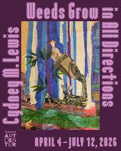

Cydney M. Lewis: Weeds Grow in All Directions
Weeds Grow in All Directions is an exhibition of Cydney Lewis’s collage works and large-scale assemblages. Using everyday materials found in her daily life–plastic bags, packing paper, magazine cutouts, as well as rhinestones and textiles–Lewis creates otherworldly landscapes that prompt meditation on the destruction and resilience of the natural world. The works in the exhibition reward close looking—to find the extraordinary in the overlooked, to reconnect with energies around us, and to feel the pulse of our shared ecology through playful wonder and poignant reflection. In this body of work, the resilient weed is both metaphor and guide, challenging our perceptions of the disregarded and revealing the quiet spirit inherent in all natural matter. In Lewis’s work, the material world intersects with the realm of elemental spirits, creating a layered tapestry of human emotion and urgent ecological awareness.
Cydney M. Lewis is a Chicago based multimedia artist who works primarily in collage and assemblage. Lewis‘s works feature an amalgamation of materials found in a variety of places; she explores the relationship between the spiritual and the natural and celebrates the depth of beauty that exists within the lived environment, pondering how humans can collectively move towards a more harmonious future despite being entrenched in a consumerist society. She studied at the School of the Art Institute in Chicago as well as L’École d’architecture in Versailles, France, receiving her BS in Architectural Studies from the University of Illinois at Urbana Champaign. She has received the 3Arts Make A Wave Grant and the Black Creativity/Green Art Award from the Museum of Science and Industry. Her work has been featured in Newcity, NBC News, and Suboart Magazine. Aside from her practice as a visual artist, Lewis has practiced ballet & art directed films, both of which give her a unique perspective on the fluidity of her narratives, & inform the materiality she employs.